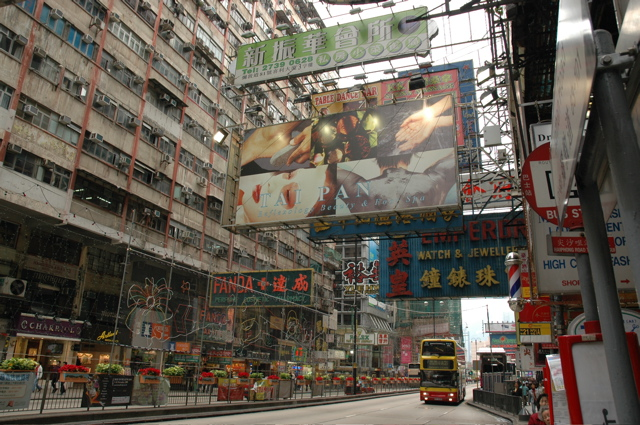
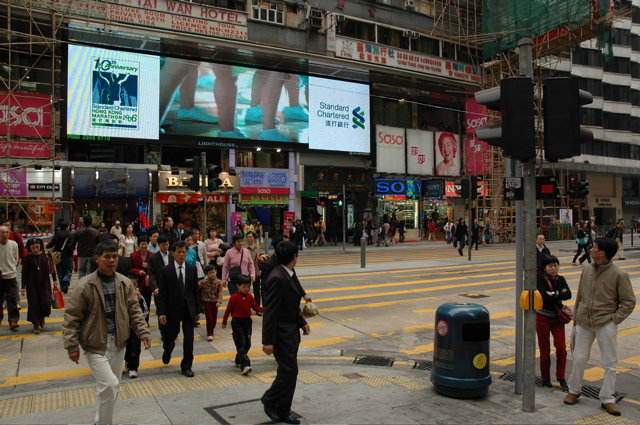
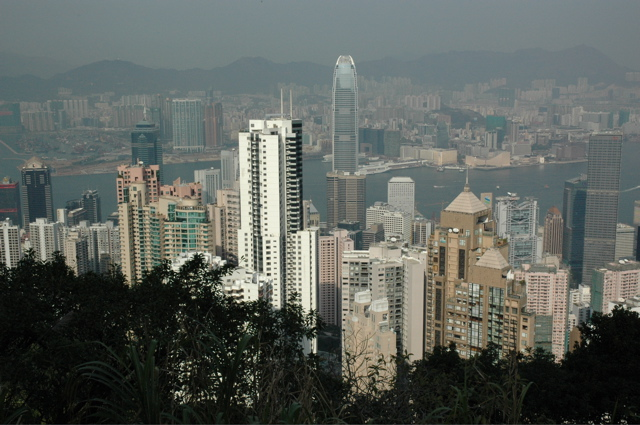
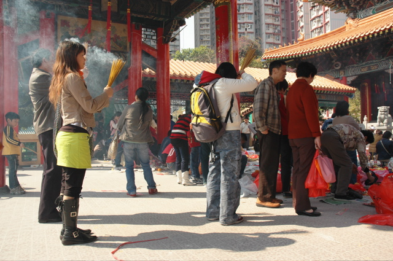

25/12/2005
Hong Kong
Nach schlappen 11 Stunden Flug mit Cathay, die den Emirates Airlines den Rang abgelaufen haben, hatten wir endlich die Gelegenheit unsere Vorstellung von Hong Kong, dem “duftenden Hafen”, mit der Realität abzugleichen. Wir hätten kaum weiter daneben liegen können. Zumindest gibt es wohl keinen Ort, an dem mehr Hochhäuser stehen (und nicht nur schöne). Am liebsten gleich aneinander, so dass die Fenster nicht mehr aufgehen. Damit die Architekten nicht zu viel zu tun haben, werden die Pläne einfach kopiert, so dass es eigentlich nur 3 verschiedene Sorten gibt, die aber jeweils 100 mal.
Glücklicherweise war hier für uns schon alles organisiert: Flughafentransfer, Hotel, Stadtrundfahrt. Nach der durchwachten Nacht haben wir uns auf ein, zwei Stündchen Sightseeing im Bus gefreut, um uns einen Überblick machen zu können. Leider handelte es sich bei der Stadtrundfahrt um einen halbtägigen Stadtrund_gang_. So haben wir schon am Abend des ersten Tages - inkl. MoDingsbums-Tempel, Peak-Bahn, Bötchenfahren in Aberdeen und Shoppen in Stanley - alles abgehakt, was wir machen wollten. Dafür sind wir schon auf der Rückfahrt vom letzten Highlight ins Koma gefallen.
Nach zig Stunden Schlafnachholen in unserem kleinen klimatisierten Hotel-Kühlschrank mit Blick auf Hinterstrassen-Ruinen hatten wir am Sonntag endlich unseren freien Tag. Den haben wir mit leidenschaftlicher Nutzung der vielfältigen, öffentlichen Verkehrsmittel verbracht, die die Kölner mit ihren Verkehrsbetrieben vor Neid erblassen lassen: Echte U-Bahnen, doppelstöckige Bimmelbahnen, Doppeldeckerbusse, Schiffe, etc.. Damit sind wir gut herumgekommen und konnten noch ein paar Tempelchen besuchen, die im Übrigen sehr beliebte Orte für Vergiftungen der Atemwege sind, weil die abergläubischen Eingeborenen hier alles verbrennen, was Feuer fängt. Natürlich haben wir das Warenangebot jedes Strassenmarktes geprüft, ob nun Fisch oder Hello Kitty angeboten wurde. Besonders hübsch war der Vogelmarkt, auf den Alt und Jung ihre singenden Vögel zum Angeben oder Verkaufen schleppen. Krönender Abschluss war die Hong Kong Lightshow, die schon nach wenigen Minuten bei einer jungen Chinesin eine Ohnmacht auslöste. Das kann man dem unbedarften Kommunistennachwuchs angesichts dieser konzertanten Energieverschwendung auch nicht übelnehmen.
   